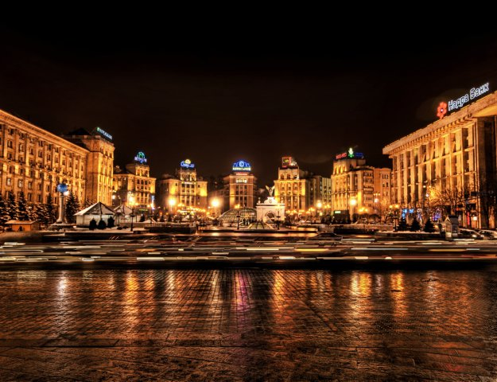

Київ
- Ки́їв — столиця України, одне з найбільших і найстаріших міст Європи. Розташований у середній течії Дніпра, у північній Наддніпрянщині. Політичний, соціально-економічний, транспортний та освітньо-науковий центр країни. Окрема адміністративно-територіальна одиниця в складі України й адміністративний центр Київської області. Районний центр Києво-Святошинського району. Адміністративно до складу Київської області не входить. Місце розташування центральних органів влади України, іноземних місій, штаб-квартир більшості підприємств і громадських об'єднань, що працюють в Україні.
- За «Повістю минулих літ», Київ заснував полянський князь Кий зі своїми братами Щеком і Хоривом та сестрою Либіддю. Згідно з археологічними даними та писемними джерелами, початок безперервного розвитку Києва датується 2-ю половиною V ст. — 1-ю половиною VI ст.; осередком розширення Києва була гора Замкова. Був столицею Русі, Київського князівства, Великого князівства Руського, Української Народної Республіки, Української Держави та Української Радянської Соціалістичної Республіки. Також був адміністративним центром однойменного литовсько-польського воєводства, козацького полку, російської губернії, радянської округи, німецької генеральної округи та радянської області.
- Один із найстаріших історичних центрів Східної Європи та християнства — Софійський собор — та Києво-Печерська лавра внесено до списку Світової спадщини ЮНЕСКО.
